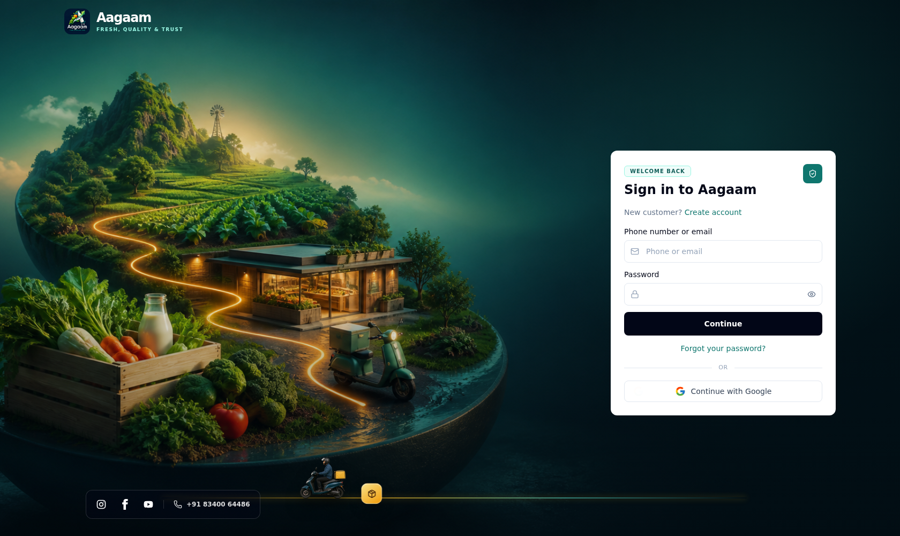
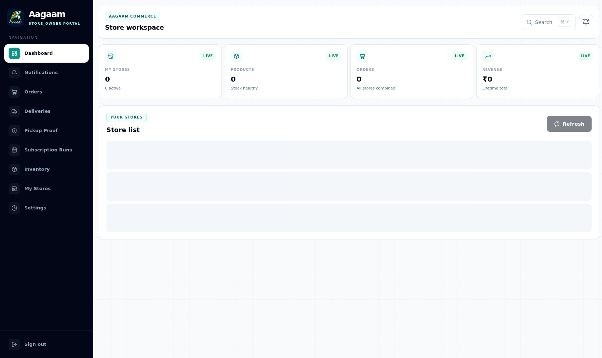
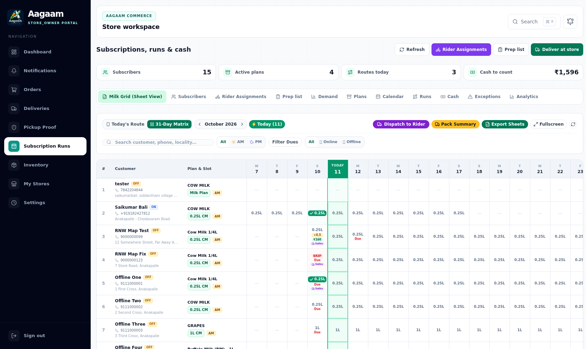
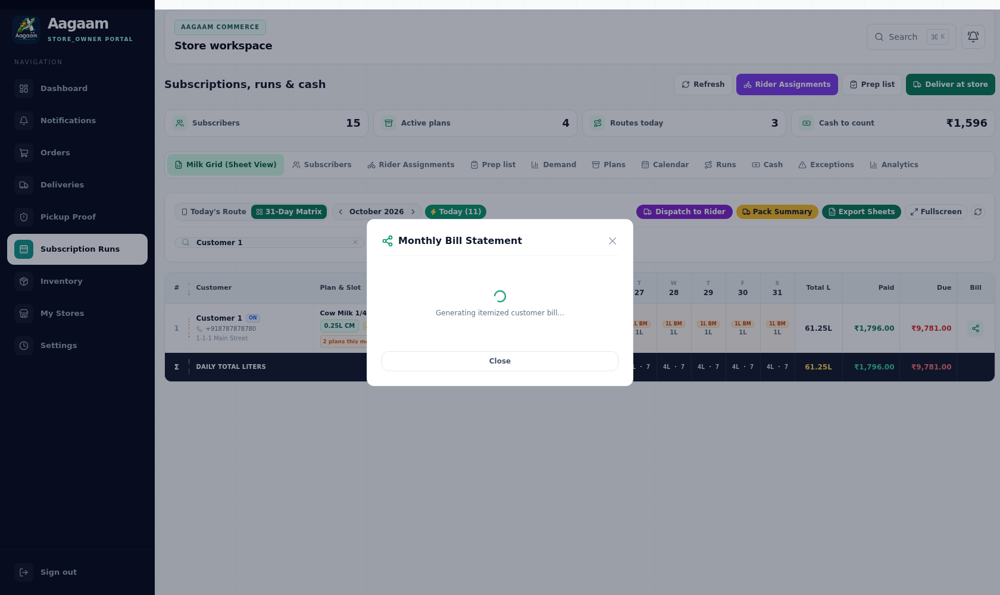
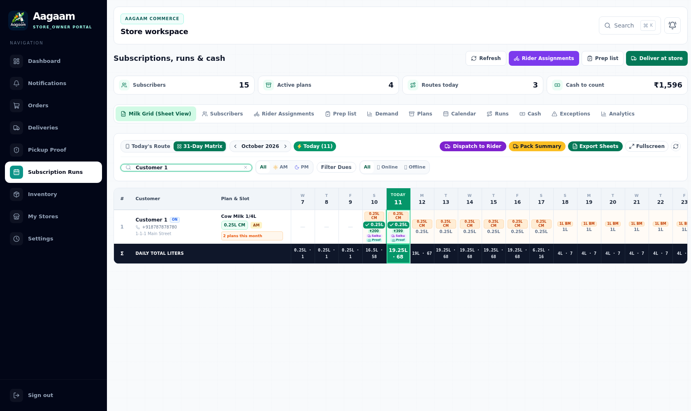

| Repository | Saikumar-bali/AAGAM_E-commerce |
| App | apps/admin-dashboard (Next.js 15 App Router) — serves Shop, Store, Rider and Admin surfaces |
| Date | 2026-10-11 |
| Database | Sandbox Postgres, DATABASE_URL=$AAGAAM_DATABASE |
| Method | Headless Chromium (Playwright) driving the real UI — no direct API calls |
The web app is one Next.js build (apps/admin-dashboard) that serves every browser role by route group. The API gateway is a separate NestJS service; the dashboard proxies /api/* to it, so the browser stays same-origin.
| Surface | Route group | Example route |
|---|---|---|
| Shop (customer) | (shop)/shop | /shop/subscriptions |
| Store portal | (store)/store | /store/subscriptions |
| Rider portal | (rider)/rider | /rider/runs |
| Admin dashboard | (admin)/admin | /admin/riders |
| Auth | (auth) | /login |
Build the shared packages first, then start the gateway and the dashboard:
# 1. shared packages (types, utils, database) — the dashboard imports them
npm run build --workspace=packages/types
npm run build --workspace=packages/utils
npm run build --workspace=packages/database # also runs prisma generate
# 2. api-gateway on :3005 against the sandbox database
cd apps/api-gateway
set -a && source .env && set +a
export DATABASE_URL="$AAGAAM_DATABASE"
node dist/src/main.js # after `npm run build --workspace=apps/api-gateway`
# 3. Next.js dashboard on :12000
cd apps/admin-dashboard
npm run build && npx next start -p 12000
next.config.js rewrites /api/:path* →
API_BACKEND_URL (default http://127.0.0.1:3005). Keep the gateway on
:3005 or set API_BACKEND_URL to match.
Every check below was performed by loading the real pages in a browser and reading the rendered DOM — never by calling the API directly. The work-host URLs used were:
| Link | Purpose |
|---|---|
https://work-1-lkhufuuxeteqzqdl.prod-runtime.all-hands.dev/ (port 12000) | Next.js web app — Shop, Store, Rider, Admin |
https://work-2-lkhufuuxeteqzqdl.prod-runtime.all-hands.dev/ (port 12001) | Mobile react-native-web previews (partners + customer) and the same-origin API proxy |
Open /login. The form takes a phone or email and a password (password mode is the default; phone OTP is disabled in this build). A store owner lands on /store.

Figure 1 — /login: single “Phone or email” field plus password, then Continue.
After signing in the store workspace loads with live counters (Subscribers, Active plans, Routes today, Cash to count).

Figure 2 — /store: store workspace summary.
/store/subscriptions opens on the Milk Grid tab: one row per customer, one cell per day of the month, with Total L, Paid, Due and a Bill action. The search box filters by customer, phone or locality.

Figure 3 — Milk Grid (Sheet View) with day cells and the Paid / Due / Bill columns on the right.
Clicking Bill on a row opens the Monthly Bill Statement modal — the same reconciled money the row shows, plus the WhatsApp message text.

Figure 4 — Monthly Bill Statement modal for the selected customer.
A customer can hold more than one subscription (a different plan, or the same plan in another slot). The grid merges those contracts into a single row, summing litres and money. The bug: when one contract had a delivered day cell that collected only part of its due, the merged row reported Due ₹0.00.
₹399 day showing ₹200.₹200, but the row reads
Paid ₹1,796.00 / Due ₹0.00. The ₹199 the customer still owes for that day is invisible,
so the store stops chasing the balance.

Figure 5 — The day-10 cell shows ₹200 while the row's Due column shows ₹0.00 (pre-fix).
StoreMilkGridService.getGrid() reconciled the active contract's ledger against every merged contract's deliveries:
reconcileSubscriptionBalance(activeSub, custSubs.flatMap((sub) => sub.deliveries))A sibling contract whose ledger was already fully paid pushed deliveryCash above the active ledger, so the helper's Math.max(0, storedDue - drift) clamped the under-collected contract's residual to zero.
Reconcile each contract against its own deliveries and sum:
custSubs.reduce((totals, sub) => {
const balance = reconcileSubscriptionBalance(sub, sub.deliveries);
totals.amountCollectedPaise += balance.amountCollectedPaise;
totals.amountDuePaise += balance.amountDuePaise;
return totals;
}, { amountCollectedPaise: 0, amountDuePaise: 0, ... });Each contract keeps its own under-collected cell, while the original ledger-drift absorption still works because it only fires when a ledger is genuinely short of its own deliveries.
store-milk-grid.service.spec.ts → “merged rows keep each contract's partial due” builds two overlapping contracts (one fully paid, one ₹200-of-₹399) and asserts the row's totalDuePaise is 19900, not 0.
| Check | How (UI) | Result |
|---|---|---|
| Web app serves | Load /, /login, /store/subscriptions, /admin | 200 |
| Store login | Submit store@aagam.com on /login | lands on /store |
| Milk grid loads | Read rendered day cells + Paid/Due columns | live data |
| Statement modal | Click Bill on a row | opens |
| Console errors | Collect page + console errors during the session | none (only the optional Google sign-in 403) |
| BUG-028 | Compare row Due before/after fix | ₹0.00 → ₹9,781.00 |
403 /
GSI_LOGGER console entry when the page origin is not an allowed OAuth origin;
it does not affect email/password login.
skills/aagam-testing/references/bug-register.md — BUG-028 entry.apps/api-gateway/src/subscriptions/subscription-balances.ts — the reconciliation helper.